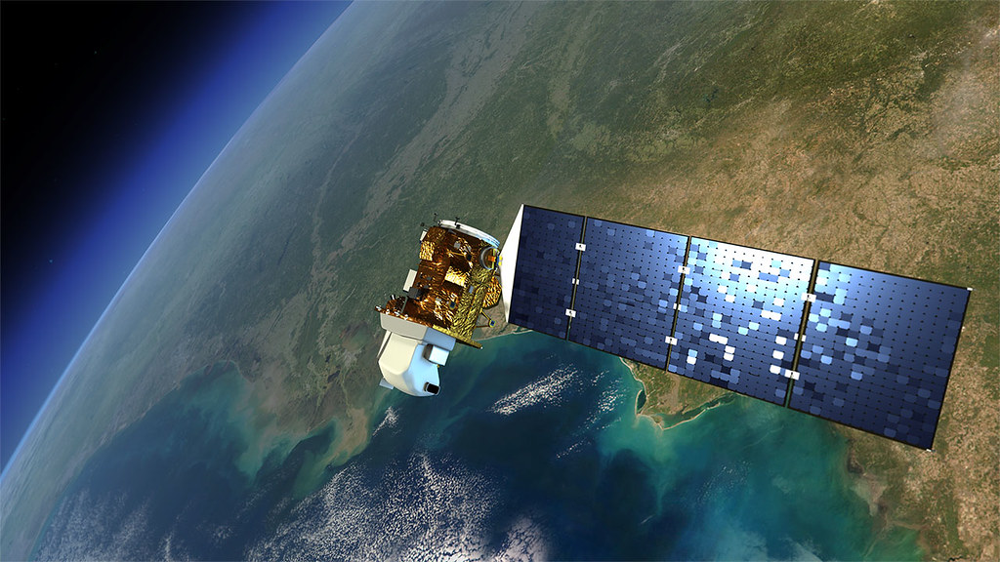
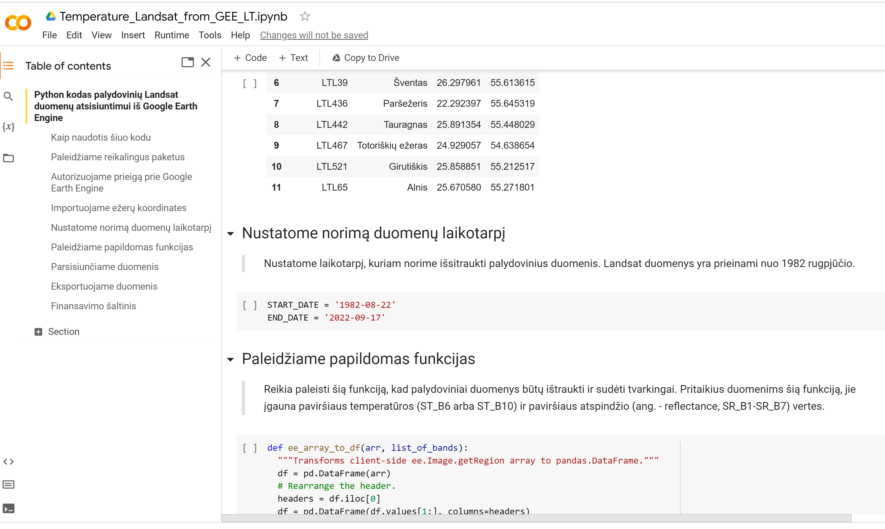
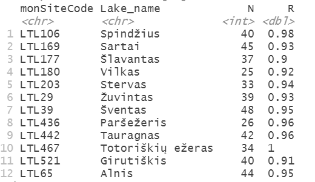
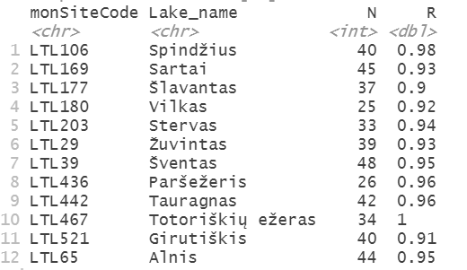

CHANGE TO LT: Extracting and analysing lake surface temperature data from satellites
Įvadas
Vandens paviršiaus temperatūrą (PT) galima gauti iš Landsat misijos palydovų. Pirmasis Landsat palydovas buvo paleistas 1972 metais, tačiau temperatūros duomenys yra renkami tik nuo Landsat 4 palydovo paleidimo 1984 metais. Nuo šių metų, palydovai turi šiluminės infraraudonosios spinduliuotės jutiklį (ang. - thermal infrared sensor), kuriuo nustatoma ilgabangė Žemės skleidžiama energija, kurios intensyvumas priklauso nuo paviršiaus temperatūros.
Šiuo metu Žemės orbitoje yra Landsat 8 (nuo 2013 m. kovo mėn.) ir Landsat 9 (nuo 2021 m. spalio mėn.) palydovai, kuriais gaunama informacija apie paviršiaus atspindį (ang. - reflectance) ir temperatūrą. Paprasčiausias būdas gauti palydovinę PT informacią yra naudojantis Google Earth engine (GEE) paslaugomis. Google Earch engine inegruoja algoritmą kuris pateikia paviršiaus temperatūros duomenis (Kelvinais) kiekvienai Landsat nuotraukos gardelei. ST algoritmas buvo sukurtas Ročesterio technologijos instituto (ang. - Rochester Institute of Technology (RIT)) ir NASA Reaktyvinio judėjimo laboratorija (ang. - Jet Propulsion Laboratory (JPL)) kartu su JAV Geologijos tarnybos programinės įrangos inžinieriais (Landsat 4-7 ir Landsat 8-9 produktų aprašymas). Temperatūros nustatymui algoritmas naudoja atspindžio duomenis iš kitų Landsat spektrinių juostų, šiluminės juostos, bei pagalbinius aukščio ir atmosferos duomenis. Tempeartūros duomenys pateikiami 100 m gardelėmis, o tai reiškia kad PT duomenis galima gauti net ir sąlyginai nedideliems ežerams. Landsat duomenys yra prieinami iki 76 laipsnių platumos. Daugiau apie Landsat 8 duomenų rinkinį galima rasti GEE nuorodoje.

Modelio kodas
Tam kad lengvai pasiekti vandens paviršiaus temperatūros duomenis, mes sukūrėme du programinius kodus. Pagrindinis kodas leidžia pasiimti duomenis iš GEE paskyros ir yra parašytas Python programavimo kalba. Šis kodas yra prieinamas naudojantis Google Colaboratory aplinka. Google Colaboratory yra nemokama programavimo aplinka, kurioje jau yra įdiegtos įvairios Python bibliotekos. Kad galėtume pasiekti duomenų rinkinius per Google Earth Engine, reikalinga Google paskyra (jei Google paskyros neturite, ją susikurti galite eidami į nuorodą. Tuomet reikia užsiregistruoti Google Earth Engine. Ši registracija leidžia autorizuoti prisijungimą ir gauti prieigą prie GEE palydovinių duomenų.
Po registracijos, naudokite programinį kodą, naudodami žemiau esančią nuorodą

Paspaudę matysite tokį dokumentą:

Kai atidarote kodą, pasidarykite jo kopiją savo Google Diske (pasirinkite Failas ir tada Išsaugoti kopiją Diske). Savo kodo kopiją galite redaguoti ir keisti kaip jums patinka. Tolimesnės instrukcijos, kaip naudotis kodu, yra pateiktos pačiame kode. Tam kad atisiųsti vandens paviršiaus temperatūros duomenis, jums reikės paruošti jums reikalingų vietų koordinačių taškų dokumentą, pagal čia pateiktą pavyzdį. Įvykdę Google Colaboratory kodą, atsiųsite temperatūros palydovinius duomenis kurie atrodys kaip čia pateiktas pavyzdys. Šiame pavyzdyje mes naudojame tik du taškus, bet jūs galite pridėti tiek taškų (eilučių) kiek jums reikia.
Kai jau turėsite dokumentą su palydoviniais duomenimis, naudokite šį R markdown kodą tam kad pašalinti duomenis iš debesuotų dienų, o taip pat duomenis iš galimai žemos kokybės Landsat 7 laiko eilutės (nuo 2018 iki 2022 metų). Šis kodas taip pat pateikia galimybes sukurti duomenų grafikus. Čia jūs galite pažiūrėti į šio duomenų filtravimo ir grafikų paruošimo rezultatus nenaudojant pateikto kodo.

Modelio taikymas
To assess the quality of the satellite temperature data we will compare it with the monitoring data from 12 Lithuanian lakes, available from the Lithuanian Hydrometeorological Service (meteo.lt). We expect small differences because in situ monitoring points are close to the shore, whereas for satellite data we chose coordinates in the central part of lake. Because satellite data points very close to the shore (50 meters or less) will be influenced by the coastal surfaces, vegetation and terrain, it is important to only use points that are sufficiently far from the shore. Nevertheless, we can see that the correlation is very high with correlation coefficients usually higher than 0.9
Tam kad įvertinti palydovinių duomenų kokybę, mes galime palyginti palydoviniu duomenis su in situ atliktai matavimais. Tam panaudosime monitoringo duomenis 12-ai Lietuvos ežerų. Šiuose ežeruose yra įrengtos automatinės stotys, prižiūrimos Lietuvos hidrometeorologijos tarnybos (meteo.lt). Svarbu yra pabrėžti, kad monitoringo stotys yra įrengtos arti kranto, o palydovinių duomenų pasiekimui naudojame taškus esančius labiau centrinėje ežero akvatorijoje (daugiau nei 50 metrų nuo kranto). Pastarasis faktas yra svarbus, nes taip išvengiame kranto paviršių ir reljefo įtakos palydoviniams duomenims. Žemiau pateiktame paveiksle matome kad ežerų in situ išmatuotos ir palydovais įvertintos temperatūros yra labai panašios, o jų koreliacijos koeficientai ežerams paprastai viršija 0.9.
 
